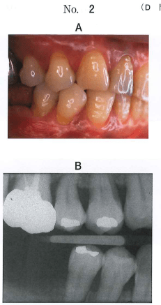

CR修復は以下の順序で行う。各ステップで適切な器材を選択することが重要である。
| 順序 | 操作 | ポイント |
|---|---|---|
| 1 | 歯面清掃・口腔内消毒 | ブラシコーン、ラバーカップ |
| 2 | 咬合検査 | 咬合紙で窩縁を咬合接触させない |
| 3 | シェードテイキング | ラバーダム装着前、濡らした状態で |
| 4 | 術野の隔離（防湿） | ラバーダム法 |
| 5 | 歯間分離 | 隣接面修復時 |
| 6 | 歯肉排除 | 歯頸部修復時 |
| 7 | 窩洞形成 | 感染歯質の除去 |
| 8 | 隔壁の装着 | 窩洞形態に応じて選択 |
| 9 | 接着操作・填塞 | 積層法（レイヤリング） |
| 10 | 光照射 | 歯質透過光も利用 |
| 11 | 咬合調整・形態修正・仕上げ研磨 | 24時間以上経過後 |
隣接する歯間を分離し、隣接面の検査・修復操作を容易にする方法。
| 器具 | 適応 |
|---|---|
| ウェッジ | 木製・透明プラスチック製。隣接面修復時に使用 |
| エリオットのセパレーター | 臼歯部用 |
| アイボリーのシンプルセパレーター | 前歯部用 |
プレウェッジ：窩洞形成前にウェッジを挿入する方法。歯間分離と歯間乳頭部保護が目的。
一時的に歯肉を排除する方法。歯頸部の修復に必要。
| 方法 | 器具・材料 | 適応 |
|---|---|---|
| 器具による排除 | ガムリトラクター | 前歯5級窩洞、くさび状欠損 |
| 排除用綿糸 | リトラクションコード | 歯頸部全周の排除 |
| 外科的切除 | 高周波電気メス、レーザー | 歯肉増殖時など |
ガムリトラクター：金属製とプラスチック製がある。唇・頬側や舌側歯肉を排除。
ペースメーカー使用患者には禁忌
複雑窩洞を単純化し、修復操作を容易にする方法。
| 修復部位 | 隔壁の種類 |
|---|---|
| 2級修復（隣接面） | メタルマトリックスバンド、トッフルマイヤー式リテーナー、ウェッジ、セクショナルマトリックス |
| 切縁隅角を含む修復 | クラウンフォーム、セクショナルマトリックス |
| 唇・頬側面歯頸部修復 | サービカルマトリックス |
くさび状欠損は唇・頬側の歯頸部に生じる欠損で、隣接面ではないことがポイント。
53歳の女性。右側の上下顎小臼歯部の知覚過敏を主訴として来院した。コンポジットレジン修復を行うこととした。初診時の口腔内写真（別冊No.2A）とエックス線写真（別冊No.2B）を別に示す。
修復に際し使用する器材はどれか。2つ選べ。

【解説】口腔内写真から小臼歯部頬側歯頸部にくさび状欠損が認められる。くさび状欠損は隣接面ではなく唇・頬側面歯頸部の欠損であるため、ガムリトラクター（歯肉排除）とサービカルマトリックス（歯頸部用隔壁）を使用する。ウェッジ、エリオットのセパレーター、メタルマトリックスバンドはいずれも隣接面（2級）修復に用いる器材であり、本症例には適応しない。